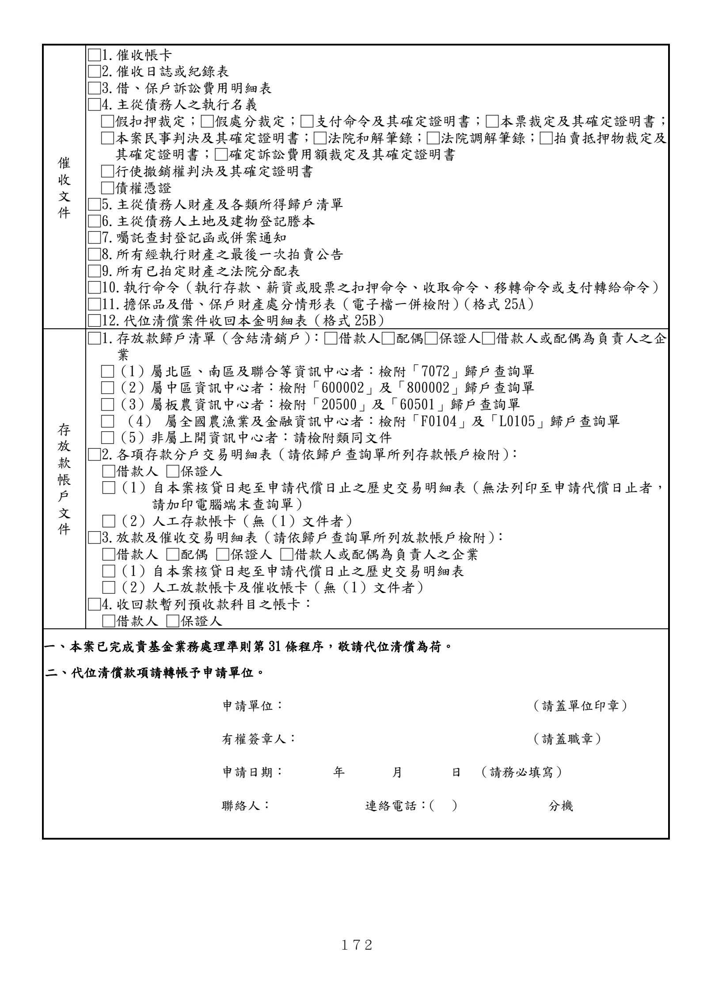

格式 26-1：代位清償申請書（農家消費貸款專用）
手冊頁：172 PDF頁：184／203

查看PDF文字層
下列文字取自PDF既有文字層，僅供搜尋、複製與無障礙輔助。複雜表格的欄列位置可能失真，正式內容請以原頁預覽或PDF為準。
催 收 文 件 □1.催收帳卡 □2.催收日誌或紀錄表 □3.借、保戶訴訟費用明細表 □4.主從債務人之執行名義 □假扣押裁定；□假處分裁定；□支付命令及其確定證明書；□本票裁定及其確定證明書； □本案民事判決及其確定證明書；□法院和解筆錄；□法院調解筆錄；□拍賣抵押物裁定及 其確定證明書；□確定訴訟費用額裁定及其確定證明書 □行使撤銷權判決及其確定證明書 □債權憑證 □5.主從債務人財產及各類所得歸戶清單 □6.主從債務人土地及建物登記謄本 □7.囑託查封登記函或併案通知 □8.所有經執行財產之最後一次拍賣公告 □9.所有已拍定財產之法院分配表 □10.執行命令（執行存款、薪資或股票之扣押命令、收取命令、移轉命令或支付轉給命令） □11.擔保品及借、保戶財產處分情形表（電子檔一併檢附）（格式 25A） □12.代位清償案件收回本金明細表（格式 25B） 存 放 款 帳 戶 文 件 □1.存放款歸戶清單（含結清銷戶）：□借款人□配偶□保證人□借款人或配偶為負責人之企 業 □（1）屬北區、南區及聯合等資訊中心者：檢附「7072」歸戶查詢單 □（2）屬中區資訊中心者：檢附「600002」及「800002」歸戶查詢單 □（3）屬板農資訊中心者：檢附「20500」及「60501」歸戶查詢單 □ （4） 屬全國農漁業及金融資訊中心者：檢附「F0104」及「L0105」歸戶查詢單 □（5）非屬上開資訊中心者：請檢附類同文件 □2.各項存款分戶交易明細表（請依歸戶查詢單所列存款帳戶檢附）： □借款人 □保證人 □（1）自本案核貸日起至申請代償日止之歷史交易明細表（無法列印至申請代償日止者， 請加印電腦端末查詢單） □（2）人工存款帳卡（無（1）文件者） □3.放款及催收交易明細表（請依歸戶查詢單所列放款帳戶檢附）： □借款人 □配偶 □保證人 □借款人或配偶為負責人之企業 □（1）自本案核貸日起至申請代償日止之歷史交易明細表 □（2）人工放款帳卡及催收帳卡（無（1）文件者） □4.收回款暫列預收款科目之帳卡： □借款人 □保證人 一、本案已完成貴基金業務處理準則第31 條程序，敬請代位清償為荷。 二、代位清償款項請轉帳予申請單位。 申請單位： （請蓋單位印章） 有權簽章人： （請蓋職章） 申請日期： 年 月 日 （請務必填寫） 聯絡人： 連絡電話： （ ） 分機